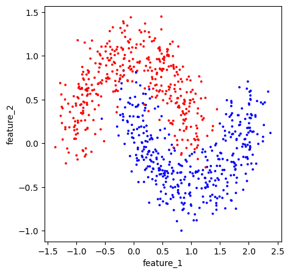

PS03 - Classification#
DS325, Gettysburg College
Prof Eatai Roth
Due Monday Mar 30, 2026 at 9a
Total pts: 20
There will be a quiz on Logistic Regression, including this homework on Thursday April 2.
Your Name:
Your Collaborators:
IMPORTANT INSTRUCTIONS:#
When you submit your code, make sure that every cell runs without returning an error.
Once you have the results you need, edit out any extraneous code and outputs.
Problem 1#
Churn is the term service companies use to describe customers that leave the platform (e.g. switching from Verizon to T-Mobile). In this problem, you will be developing a classifier to predict customers at risk of churn from an Iranian Telecom service. The data come from the UC Irvine ML repository.
Fit a LogisticRegression model to the data:
split your data into training and testing sets (split 70-30 train-test)
scale the feature data
fit your model. Use some form of regularization and try several values of regularization strength (C) using LogisticRegressionCV.
use the model to make predictions.
plot the confusion matrix of the training and test set side by side0
print the classification report of the test set.
Then, answer the question below.
# %%capture
# !pip install ucimlrepo
# You only need to run this cell once.
# If the package is installed successfully,
# re-comment out the line below to never run this cell again.
from ucimlrepo import fetch_ucirepo
import pandas as pd
import matplotlib.pyplot as plt
# fetch dataset
iranian_churn = fetch_ucirepo(id=563)
# data (as pandas dataframes)
X = iranian_churn.data.features
y = iranian_churn.data.targets
Questions
What regularization did you use and with what value of C?
your answer here
Which were the three most informative features?
1st most
2nd most
3rd most
What were the Recall, Precision, and Accuracy of your algorithm?
Recall:
Precision:
Accuracy:
Which metric is most useful for this problem? Why?
your answer here
Suppose your algorithm could predict churn 2 months before it happened. How might the company act on these predictions?
your answer here
Problem 2#
In this exercise, you’ll compare three models and how they classify a synthetic dataset, nested moons.
Fit the following models:
Plain LogisticRegression
LogisticRegression with polynomial features (up to degree 5)
LogisticRegression with polynomial features (up to degree 5) with Lasso
Make each model as good as possible.
For each model:
plot the confusion matrix
print the classification report
plot the decision boundaries
For a classification problem with 2 features, we can plot the decision boundary separating the regions of the plane into those that map to each category. For each model, plot the decision boundary plot along with the data points from the test set.
You may use co-pilot/ChatGPT to create the DecisionBoundary plots.
Then answer the questions below.
from sklearn.datasets import make_moons
import matplotlib.pyplot as plt
import matplotlib as mpl
df = pd.DataFrame()
df[['feature_1','feature_2']], df['y'] = make_moons(n_samples=800, noise=.2, random_state=1)
fig, ax = plt.subplots(1,1, figsize=(5,5))
cmap = mpl.colors.ListedColormap(['red', 'blue']) # Training Data
df.plot(x = 'feature_1', y = 'feature_2', c = 'y',
s = 3, colorbar = False,
kind = 'scatter', cmap = cmap,
ax = ax)
plt.show()

Questions
What are the Accuracy scores for each model?
Logistic
Logistic with Polynomial
Logistic with Polynomial and Lasso
Describe the decision boundaries for each?
Logistic
Logistic with Polynomial
Logistic with Polynomial and Lasso
Based on the decision boundaries and the confusion matrices, state which models are over- or under-fitting if any.
Logistic
Logistic with Polynomial
Logistic with Polynomial and Lasso